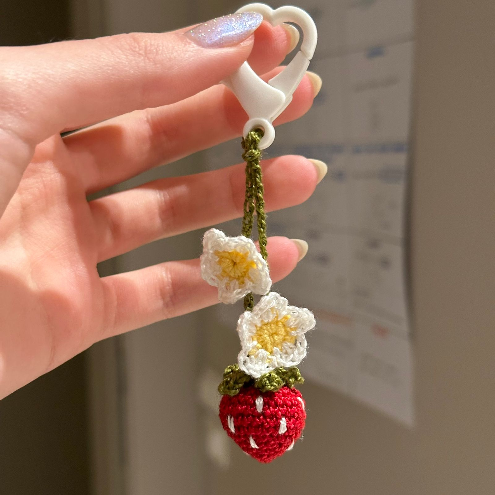
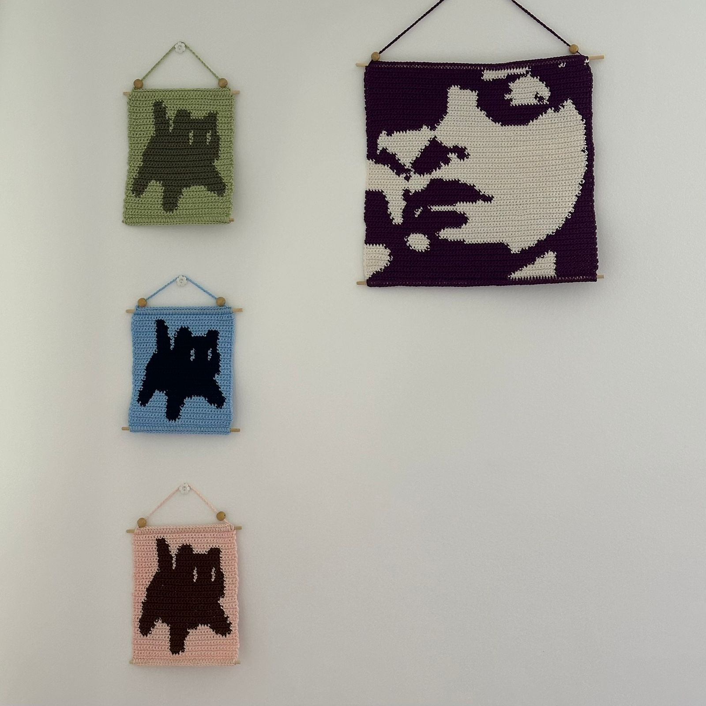

Entre em Contato Comigo!
-

belly576
-
IzabellyS576
-
izabelly_souza3
Para o meu primeiro site autoral, decidi falar sobre o meu hobby favorito dentre vários outros: o crochê!! Já fazem 5 anos desde que eu aprendi a fazer crochê (durante a pandemia), e, mesmo durante todo esse tempo, continua sendo meu passatempo favorito.
Tudo começou com a minha tia me ensinando as correntinhas básicas do crochê, há muuuito tempo antes mesmo da pandemia. Então, com a quarentena e suas várias horas vagas, decidi me aprofundar nesse hobby!
Primeiro, aprendi os pontos básicos (ponto baixo, ponto alto etc.) e depois aprendi a fazer amigurumi (são bichinhos de crochê)! O meu primeiro amigurumi ever foi uma bolota :). Baby steps... Aqui o link da playlist da diva que me ensinou a fazer a bolota:
Aliás, tudo o quê eu sei hoje sobre crochê foi aprendido pela internet (menos a correntinha rsrs)! Boa parte foi pelo Youtube, onde vi as aulas de pontos básicos. Depois, procurei muita inspiração de projetos no Pinterest e, então, voltava pro Youtube em busca de tutoriais que os ensinassem. Hoje em dia, dou uma procurada no TikTok também, tem umas coisas bem legais!
Aqui vai um pequeno portif√≥lio contendo alguns dos meus projetos, principalmente os mais recentes. Confesso que tenho o p√©ssimo hábito de esquecer de bater foto das coisas que eu fa√ßo. E √© bem por isso que vários projetos (presentes que já dei pra muitas pessoas) permanecem s√≥ na minha mem√≥ria mesmoüíî. A ordem das fotos √©: projetos mais antigos -> mais recentes.
Sapos
Suculenta
Chaveiro de casal de sapos
Cardigan
Bolsinha para agulhas
Gato
Patinho
Chaveiro Snoopy
Chaveiro Woodstock
Decoração pro fone
Chaveiro de morango
Bolero
Porta Copos (guardado)
Porta Copos (exposto)
Penal com forro de tecido
Várias tapeçarias de crochê
Chaveiro de gato
Chaveiro de planta
Esse site foi um projeto pra praticar os meus novos conhecimentos sobre html, css e javascript. Foi muito divertido poder falar sobre uma velha paixão minha, mas, mais do que isso, foi motivador ter feito isso.
Ao longo do processo de construção do site, percebi o quão semelhante é o processo de aprendizagem do crochê e da programação, assim como de qualquer outra habilidade. Quando comecei a aprender crochê, parecia que as peças nunca iriam ficar tão bonitinhas e eu nunca conseguiria fazer tão rápido quanto as moças dos vídeos. Agora olha pros meus projetos recentes!!
Então, é motivador saber que as coisas que parecem ser impossíveis agora serão naturais depois de um tempo de prática e estudo. Espero que esse tempo passe tão rápido e prazerosamente quanto foi ter aprendido crochê!❤️
belly576
IzabellyS576
izabelly_souza3